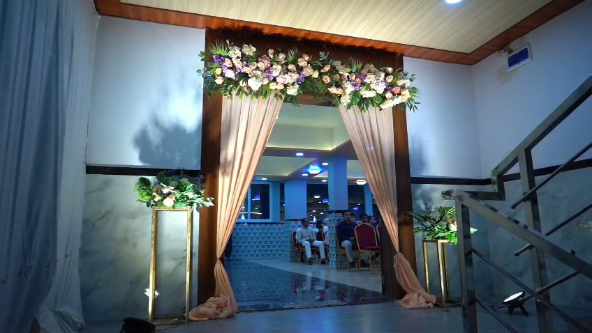
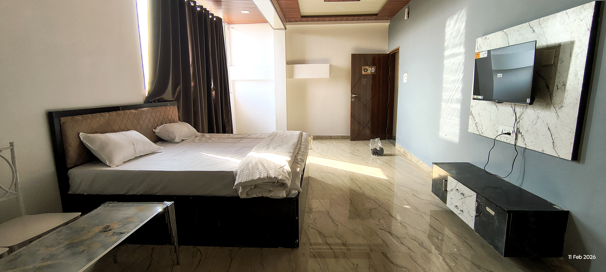
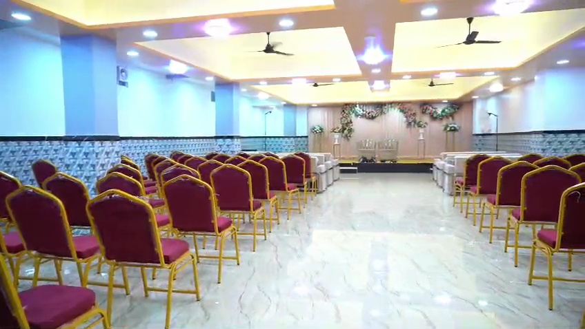
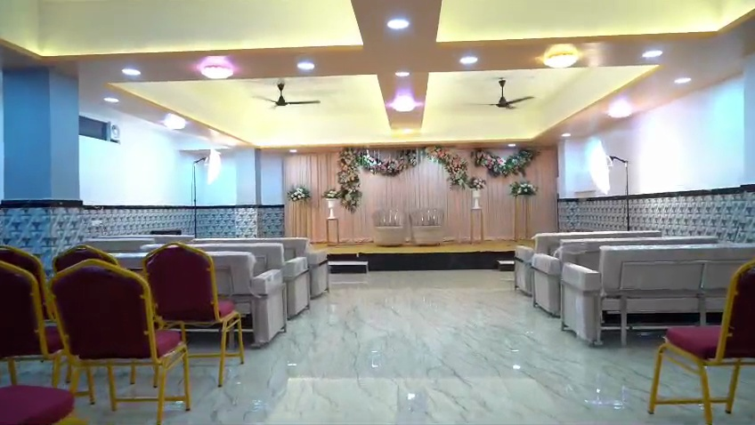
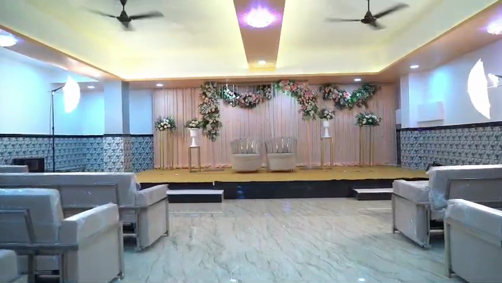

Gallery
Give the public something they can imagine themselves inside.
This gallery now holds the real venue visuals: stage setup, seating atmosphere, hall layout, and hotel room photography.
Real estate visuals for stage setups, seating ambience, wedding halls, and guest stay interiors.
Gallery
This gallery now holds the real venue visuals: stage setup, seating atmosphere, hall layout, and hotel room photography.

Shows the actual stage styling and how the celebration setup reads on camera.

Useful for showing guest seating, circulation space, and the scale of the event hall.

A much stronger arrival visual from the wedding video that adds character before guests even enter the hall.

Builds trust in the stay side of the property for wedding families and outstation guests.

A stronger still from the wedding video that shows the full ceremony axis instead of only seating.

Highlights the decorated stage together with guest lounge seating for a fuller event impression.

Brings the floral styling and ceremony backdrop forward more clearly than the earlier extracted stills.
A short venue video makes the estate feel active, real, and much more premium than static placeholders alone.
A second live clip gives visitors more confidence by showing another real moment from the property instead of only still images.
This newer clip adds another real celebration angle, helping visitors trust the property faster through authentic footage.
What this page should become
The multi-page site already feels more genuine because visitors can now see the actual stage, halls, and rooms.
The decorated stage image instantly explains that this is a real wedding and celebration property.
Hall and seating visuals help visitors understand the scale and guest arrangement immediately.
Room images make the destination wedding promise feel more complete and believable.